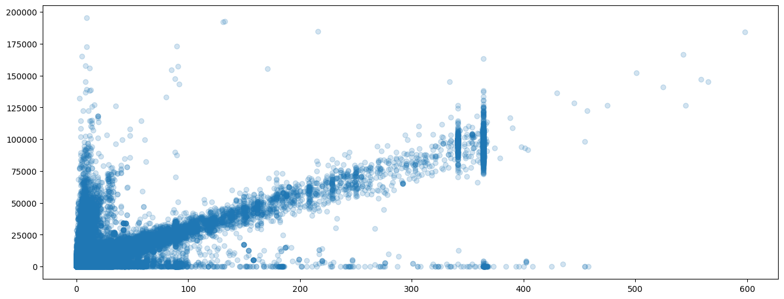

Skills: Excel, SQL, Python, Power BI, Modelagem de Dados, ETL
Olá, meu nome é Leonardo e sou um analista de dados com formação em Engenharia de Produção, o que me proporciona uma visão sistêmica dos processos e uma abordagem estruturada na análise de dados. Com experiência em ETL, desenvolvimento de dashboards no Power BI a partir de dados do Salesforce e criação de KPIs que impulsionam decisões estratégicas, domino ferramentas e linguagens como SQL, Excel, Python e Power BI. Sempre busco entender os processos e resolver problemas complexos de maneira criativa e eficaz. Meu objetivo é consolidar-me como especialista em análise de dados e criar soluções impactantes que agreguem valor às organizações.

Esse projeto contém análises feitas em MySQL. O dataset apresenta vários aspectos da satisfação dos funcionários, desempenho, rotatividade e outros fatores relevantes de RH. O objetivo dessas análises é extrair insights que possam ajudar as empresas a melhorar a retenção de funcionários, a gestão de desempenho e a tomada de decisões.

Este projeto é uma análise de vendas construído usando um dataset fictício de vendas de alimentos e bebidas de 2017 a 2019. O objetivo foi fornecer insights sobre as vendas totais, valor médio do ticket e volume de vendas em diferentes categorias de produtos e períodos de tempo..

Este projeto utiliza dados do portal da transparência sobre viagens do governo em 2023. O objetivo dessa análise é explorar os dados, gerar novas informações e criar um gráfico com matplotlib para visualizar tais informações.